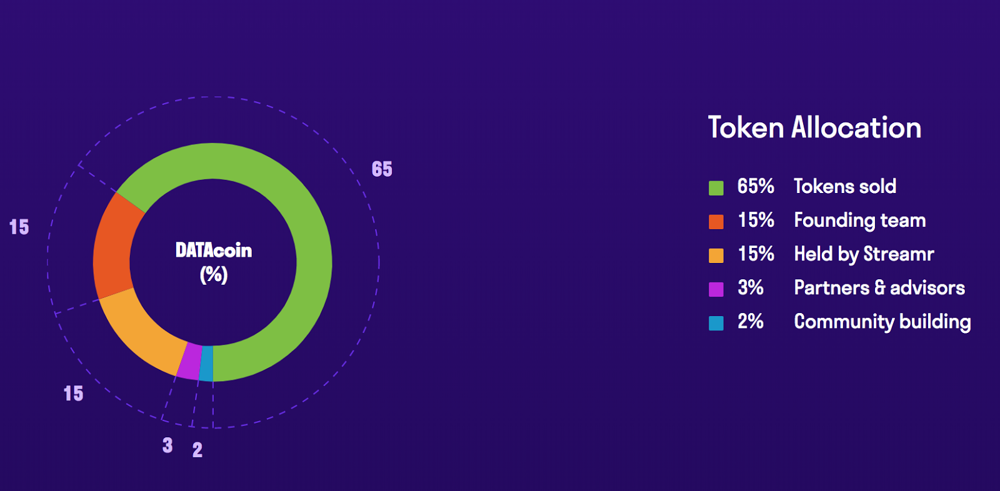
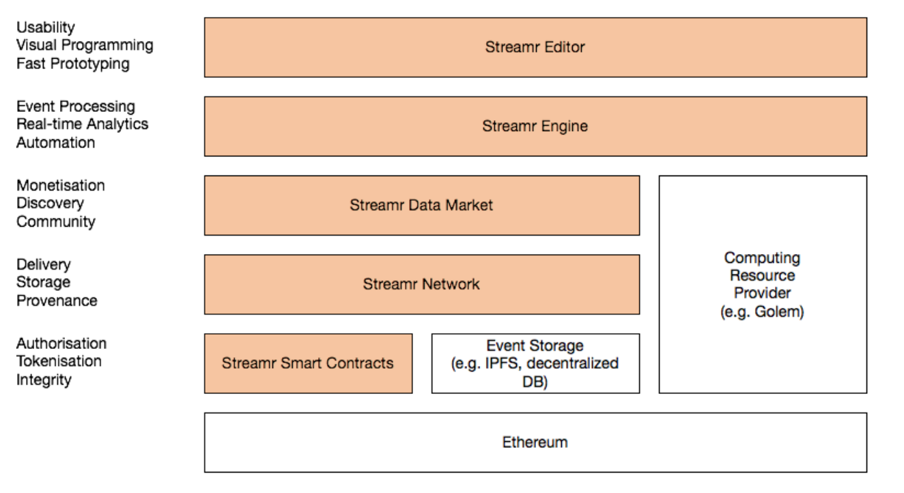
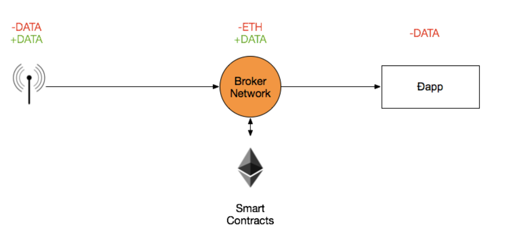
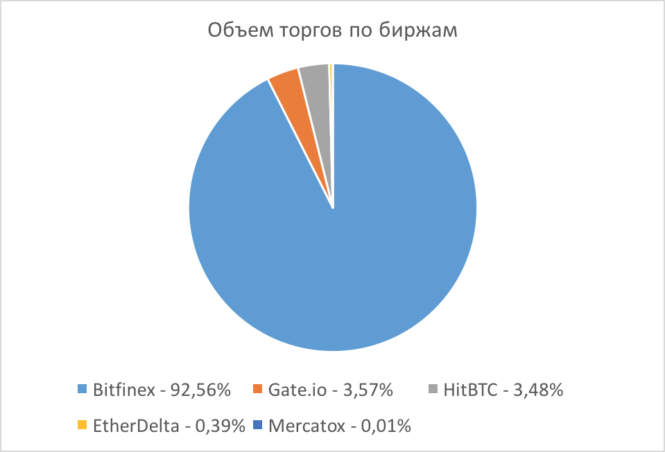
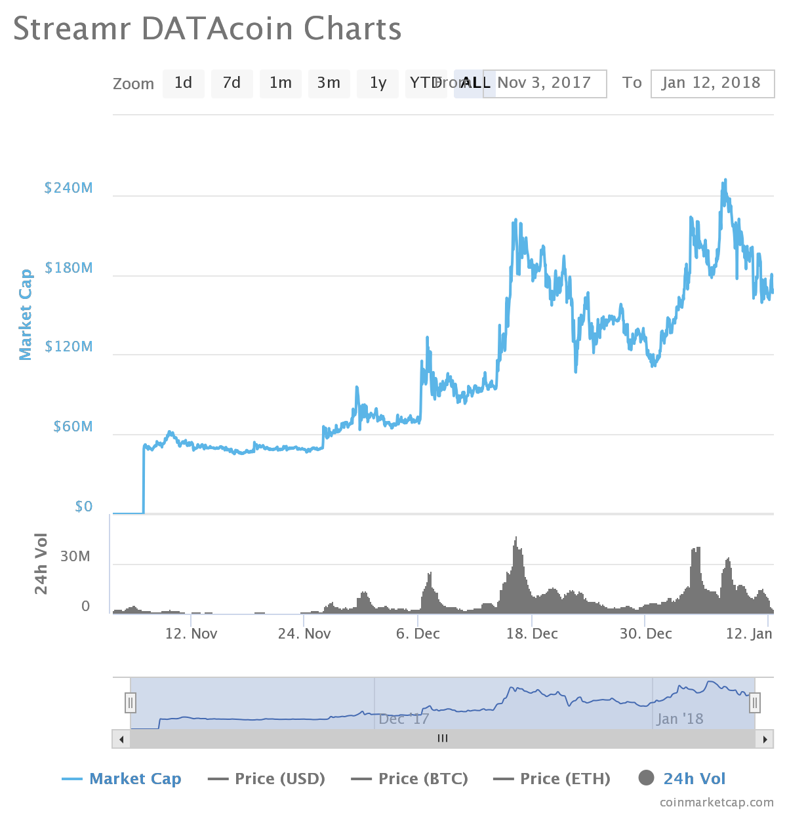
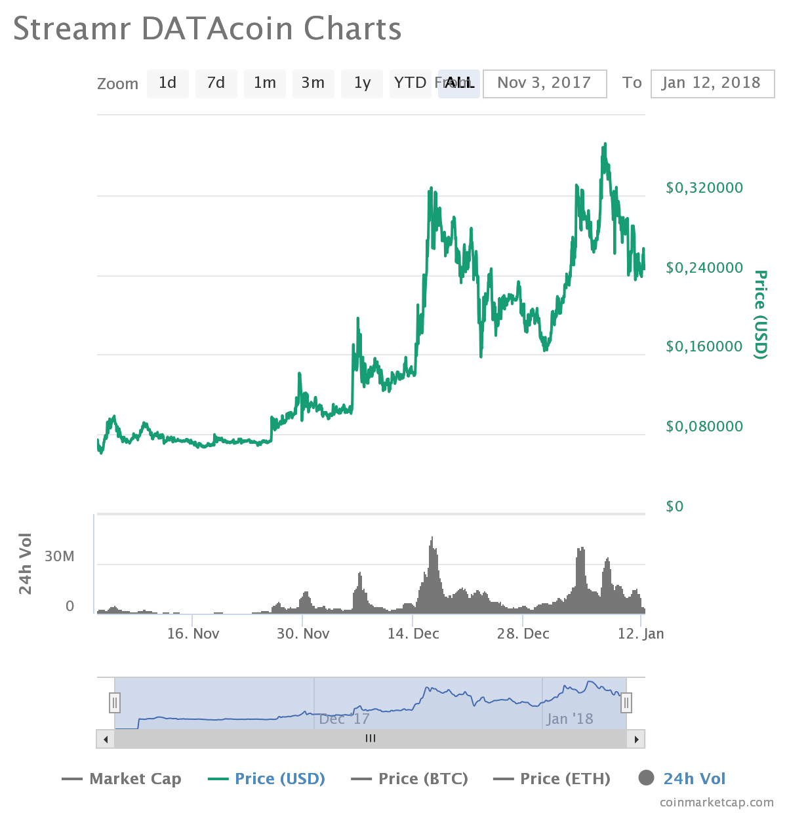

Streamr это площадка, которая токенизирует данные, предоставляемые пользователями в режиме реального времени (real-time). Каждый участник системы может использовать или продавать real-time данные с помощью децентрализованной p2p сети. Например, в качестве данных может предоставляться информация о скорости/геолокации общественного транспорта, данные о температуре воздуха, данные о стоимости определенного вида товаров в разных магазинах и т.п.
На официальном сайте проекта приведен пример беспилотного электромобиля. Для оптимальной езды автомобилю необходимы данные о ситуации с пробками, ценах на электричество на зарядных станциях поблизости, прогноз погоды и т.п. Streamr предоставляет единый интерфейс для использования потоков real-time данных: каждый пользователь может добавлять события в потоки данных, каждый может подписаться на нужные ему потоки и использовать их в децентрализованных приложениях.
DATAcoin, нативный токен проекта, используется участниками-потребителями для покупки данных, им же оплачиваются услуги по предоставлению данных и работе узлов, поддерживающих систему.
Идеология проекта неразрывна с идеологией интернета вещей IoT (Internet of Things), которая находит все больший отклик в современном мире. Ключевым отличием продукта является предоставление данных именно в режиме реального времени.
Механизмы и принципы эмиссии
DATAcoin - нативные токены проекта Streamr.
Тикер - DATA.
Стандарт токена: ERC20
Максимальное количество токенов: 1’000’000’000 DATA
ICO проекта проводилось в три этапа: закрытый pre-sale, открытый pre-sale, crowdsale.
Hard cap (совместный на все этапы) = CHF 30’000’000 (швейцарский франк, примерно равен USD, на 11.01.2017 1CHF = 1.0185USD).
1CHF = 18,25 DATA.
1ETH = 5’365,95 DATA.
Количество токенов, доступных во время ICO: 650’000’000 DATA (65% от общего количества).
Этапы проведения:
Закрытый pre-sale.
Скидка 15%.
14 сентября открытый pre-sale
Hard cap - CHF 5’000’000
Скидка 10%.
6 октября - 13 октября 2017 crowd-sale.
Этап открытого pre-sale был осуществлен на базе платформы для проведения ICO Bitcoin Suisse: https://www.bitcoinsuisse.ch/streamr-network/.
Во время ICO участникам, было необходимо пройти процедуру KYC (Know Your Client), во время которой пользователи разделялись на две группы в зависимости от суммы вложений: менее или более CHF 5’000. Для пользователей, вложение которых составляло менее CHF 5’000, процедура KYC была упрощена.
Распределение токенов:
65% - распределение во время ICO.
15% заморожено на 1 год (или больший срок по решению Streamr) для участников команды: советников, менеджеров, разрабочтиков и т.д.
15% проекту Streamr.
3% партнерам и советникам
2% airdrop и т.п.

Детали ICO можно изучить в соответствующем документе и на официальном сайте:
https://s3.amazonaws.com/streamr-public/Crowdcontribution+Information+Summary+(20170912).pdf
https://token.streamr.com/
ICO проекта прошло успешно, hard cap был достигнут в короткие сроки. ICO Streamr DATAcoin стал первым в мире ICO с полноценной процедурой KYC, AML для всех участников проекта. Это увеличило порог входа участников, но стало своеобразным компромиссом и снизило законодательные риски как для участников, так и для представителей проекта. Команда проекта решила, что для долгосрочной перспективы проекта это самый надежный принцип выпуска токенов.
Механизмы обеспечения консенсуса
Платформа работает на базе токенов DATAcoin стандарта ERC20, выпущенных на Ethereum, соответственно, на данный момент механизмом консенсуса является алгоритм PoW.
Архитектура системы
Сеть состоит из трех типов участников:
производители данных;
потребители данных/подписчики;
узлы-брокеры (Streamr Broker Nodes) являются основным программным компонентом сети. Ими выполняются такие задачи как публикация событий, подписка на потоки, настройка потоков, обработка хранилища, связь с узлами Ethereum и т.п.
Стоит отдельно отметить, что Streamr не является блокчейном. Он является функциональной p2p надстройкой над блокчейном Ethereum, на базе которого используются возможности смарт-контрактов. Узлы-брокеры являются программным компонентом площадки, который обеспечивают ее функциональность. Интеграция приложений с функционалом узлов-брокеров реализована через API.
Децентрализованный поток обмена данными в режиме реального времени реализован на базе многоуровневого стека, схема которого приведена ниже.
Стек состоит из следующих объектов:
Streamr Editor - инструментарий на уровне юзабилити, позволяющий быстро и просто создавать децентрализованные приложения, использующие потоки данных.
Streamr Engine - высокопроизводительный механизм аналитической обработки событий в потоках данных. Он может работать, например, на базе провайдера децентрализованных вычислений, такого как Golem.
Streamr Data Market - совокупность потоков данных, на которые можно подписаться и использовать.
Streamr Network - уровень p2p передачи данных между узлами-брокерами.
Streamr Smart Contracts позволяет узлам сети достичь консенсуса, хранить метаданные потока, выполнять проверки целостности данных, обеспечивать безопасное перемещение токенов.
Взаимодействие в сети
Подписчики являются потребителями данных. DATAcoin позволяет им подписываться на определенные потоки данных, которые им нужны.
Другие стороны получают DATAcoin, внося свой вклад в сеть. Производители получают DATAcoin за предоставление данных. Узлы-брокеры поощряются, чтобы сделать две вещи: сообщать контрольные суммы для разбиения данных, доставлять данные смарт-контрактам. Обе операции требуют оплаты в gas Ethereum, но эти расходы перекрываются выплачиваемыми DATAcoin.
Лицензирование и юридические аспекты
Как было сказано выше, отличительной чертой проекта является проведение на ICO процедуры KYC для всех участников. Таким образом проект обезопасил себя сразу по нескольким направлениям, среди которых:
Соблюдения AML законодательства и минимизации рисков уголовной ответственности за его нарушение;
Объяснения банкам источника происхождения средств;
Недопущения к "инвестированию" граждан запретных юрисдикций (США, Китай, Сингапур и т.п.).
Производительность и масштабируемость
Масштабируемость системы достигается благодаря разбиению данных: трафик событий всей сети разбивается на независимые разделы, называемые разбиения. Не все узлы обрабатывают весь трафик: каждый узел-брокер обрабатывает трафик, принадлежащий к определенному набору разбиений.
В контексте масштабируемости разработчикам часто задавали вопрос об ограничениях, накладываемых параметрами сети Ethereum и стоимостью gas для выполнения смарт-контрактов. Однако, нужно понимать, что, во-первых, не каждому пользователю сети необходимо запускать узел-брокер Streamr (можно привести аналогию с биткоином: для того чтобы использовать биткоин, нет необходимости его майнить). Поощрения узлам-брокерам будут коррелироваться с текущим трафиком, балансируя количество узлов и скорость работы системы. К тому же, обращение к смарт-контрактам Ethereum происходит только в ряде случаев, сами данные не передаются в блокчейн. Смарт-контракты используются для передачи агрегированных состояний изменения системы.
Во-вторых, Streamr не зависит от конкретного блокчейна и с развитием технологий, масштабирующих блокчейн, в перспективе сможет привести к более эффективной работе сети.
Встроенные механизмы и функции
Среда визуального программирования
Для возможности разрабатывать приложения, использующие потоки данных, поступающие в режиме реального времени, не только программистами, создана среда визуального программирования. Ее инструменты позволяют объединять и анализировать потоки данных, использовать методы визуализации, фильтрации и т.п. Работа в среде выполняется с помощью готовых шаблонов и модулей, которые пользователи могут настраивать под свои нужды.
Попробовать инструмент можно на официальном сайте проекта после регистрации:
https://www.streamr.com/canvas/editor
Пользователю доступна серия туториалов, которые научат его пользоваться системой и анализировать данные. После ее первичного использования идея проекта становится гораздо понятнее “на практике”.
Координатор узлов
Координация разбиений потоков данных между узлами-брокерами и поддержания актуальности изменений данных при появлении или исчезании узлов является основной задачей координатора сети. В данной системе в роли координатора выступает смарт-контракт на блокчейне Ethereum. Узлы-брокеры сети узнают текущее состояние системы, запрашивая и просматривая смарт-контракты.
Узлы вычисляют контрольные суммы по потокам данных и передают их смарт-контракту через определенные промежутки времени. Выполняются только полезные изменения, в случае их отсутствия функция ничего не выполняет.
Когда в систему необходимо внести изменения, узел, который их вносит, получает вознаграждение в DATAcoin.
Продукт
У команды уже есть готовый продукт для использования потоков данных, поступающих в режиме реального времени, но на данном этапе он работает централизованно. Для обработки данных и обмена сообщениями используются такие фреймфорки как Kafka и Cassandra.
Платформа Streamr была продемонстрирована в рабочем режиме на Ethereum Developers Conference (EDCON) в феврале 2017. Платформа в текущем ее состоянии функциональна и масштабируема, применяется в корпоративном использовании. Но у команды прописан поэтапный план по ее модернизации и переводе в децентрализованный p2p режим работы.
Модернизация продукта будет происходит итеративно и децентрализация будет вводиться поуровнево; по словам основателя, займет около 3-5 лет. Таким образом, с одной стороны, проект является своеобразным стартапом, нуждающимся в финансировании, с другой – у них уже есть рабочий продукт.
Возможности интеграции
Площадка Streamr является независимой от конкретного блокчейна и в будущем может использоваться на базе любой платформы со смарт-контрактами.
Для первого запуска был выбран Ethereum, так как это готовый популярный и рабочий продукт с необходимым функционалом.
Стоит также отметить, что API брокер-узлов может использоваться приложениями, использующими стандартные библиотеки HTTP и Websocket на любом языке. Для удобства использования команда предоставит справочные рекомендации для нескольких языков программирования. Основная платформа будет написана на JavaScript.
Распространение
Распределение объема торгов токена DATAcoin (DATA) по данным coinmarketcap.com на 12.01.18:
Объем торгов за последние сутки: $3’538’220 USD / 248.98 BTC / 2’903 ETH
Динамика капитализации
Объем рыночной капитализации на 12.01.18, по данным coinmarketcap.com, составляет $169’235’133. Максимальный объем был достигнут 7.01.18 и составил $251’850’015.
Динамика капитализации с начала торгов:
Динамика цены токенов
На 12.01.18, по данным coinmarketcap.com, цена токена DATA составляет $0,249921. Максимум стоимости был достигнут 7.01.18 и составил $0,371924.
Анализ Road Map и White Paper
На официальном сайте проекта представлены следующие документы:
White Paper проекта:
https://s3.amazonaws.com/streamr-public/streamr-datacoin-whitepaper-2017-07-25-v1_0.pdf
В документе приведено достаточно подробное описание функционала системы, принципов интеграции с приложениями, которые будут использовать real-time данные. Также представлена подробная поэтапная Road Map, но она не снабжена датами. В одном из интервью основатель Streamr говорил, что выполнение всех этапов и перевод уже работающей централизованно платформы на децентрализованный уровень займет 3-5 лет.
На странице, посвященной ICO, приведены документы, касающиеся его деталей. Среди них:
-
Crowdcontribution information summary:
https://s3.amazonaws.com/streamr-public/Crowdcontribution+Information+Summary+(20170912).pdf -
Crowdcontribution Terms and Conditions:
https://s3.amazonaws.com/streamr-public/Governance+Terms+-+Crowdcontribution.pdf -
Bitcoin Suisse Framework Agreement:
https://www.bitcoinsuisse.ch/assets/pdf/Framework_Agreement_Streamr_Crowd_Contribution.pdf
Документация проекта достаточно подробная и дает представление о принципах работы площадки. Также командой активно ведется блог https://blog.streamr.com/, в котором, в том числе, присутствуют ежемесячные отчеты об этапах развития системы.
Github проекта также присутствует, но нельзя сказать, что он отличается высокой активностью https://github.com/streamr-dev .
Анализ команды проекта и аффилированных лиц
Команда
В управляющий состав команды входят:
Henri Pihkala - основатель, CEO.
Магистр естественных наук, CEO/CTO в двух компаниях, связанных с алгоритмическим трейдингом. Занимается разработкой инструментов и инфраструктуры для данных, поступающих в режиме реального времени. Сторонник децентрализации приложений и создания инфраструктуры данных, доступных для всех. В трейдинге очевидна необходимость обладания максимально свежими данными, использование устаревших не приведет ни к каким результатам. На этом базисе возникла идея создания Streamr.
Risto Karjalainen - COO.
PhD Уортонской школы бизнеса при Пенсильванском университете в сфере теории поведенческих финансов, машинного обучения и эволюционных вычислений. До начала деятельности в сфере децентрализованных вычислений и real-time данных был портфельным менеджером и специалистом по биржевому анализу в JP Morgan & Merrill Lynch.
Nikke Nylund - основатель.
Бакалавр естественных наук; серийный предприниматель с нестандартным мышлением и несколькими успешными проектами, такими как Quartal (группа компаний, предоставляющая программные решения и сопутствующие услуги в отрасли управления активами и корпоративного управления)
Члены управляющего состава являются акционерами Streamr и получат свою часть из 15% токенов, предназначенных проекту Streamr. Совместно члены управления (и подразделения, которыми они управляют) владеют примерно 60% акций и голосов Streamr.
На официальном сайте https://www.streamr.com/ приведены еще 9 участников команды: разработчики, дизайнер, маркетологи и т.п.
Проект Streamr консультируется 8 советниками, среди которых можно выделить:
Julian Zawistowski - CEO проекта GOLEM, децентрализованная платформа предоставления пользователями свободных компьютерных мощностей за финансовое вознаграждение.
Wendell Davis - один из первоначальных основателей проекта Ethereum, product designer в OmiseGO, советник в Golem.
Thomas Greco - советник в OmiseGO, советник в Cosmos.
Alex Leverington - один из основных разработчиков Ethereum.
Nicolai Oster - Глава Initial Contribution Offering (ICO) & Партнер в Bitcoin Suisse AG (швейцарский поставщик финансовых услуг в сфере криптовалютных активов)
Команда проекта выглядит достаточно серьезно и обладает необходимым опытом в сфере использования real-time данных. Особое внимание привлекает тесной связью с такими крупными проектами, такими как Ethereum, Bitcoin Suisse AG, Golem, OmiseGO.
Представители команды часто дают интервью и активно отвечают на вопросы пользователей (например, на reddit), что говорит в пользу их открытости и готовности к диалогу с пользователями.
Конкуренты
Основным конкурентом Streamr называют IOTA, так как целевым рынком обоих проектов является IoT (Internet of Things).
Одним из ключевых моментов IoT является то, что он производит большое количество данных, которые являются востребованными в очень короткий промежуток времени. Такая информация как дорожный трафик, цены на бензин, погода, загруженность общественного транспорта и т.п. актуальна только в режиме реального времени. А проект Streamr нацелен именно на эту сферу деятельности.
Большая техническая разница заключается в том, что IOTA это блокчейн (на базе ациклического графа DAG), а Streamr это просто p2p сеть для широкомасштабной передачи данных в режиме реального времени. Это позволяет Streamr хорошо подходить для приложений с низкой задержкой и высокой пропускной способностью, например для алгоритмической торговли. Блокчейн используется в Streamr для процессов, требующих высоких показателей безопасности, таких как передача ценностей (токены DATAcoin), контроль доступа, проверка целостности данных. Первый блокчейн, на базе которого работает Streamr ‒ Ethereum, так как она широко внедрена и в ней реализованы смарт-контракты, но, как уже было сказано, система может работать на любой платформе со смарт-контрактами.
Streamr предоставляет не только сеть передачи данных, но и дополнительный интуитивный инструментарий для обработки real-time данных.
Также проект создал ветку на reddit : https://www.reddit.com/r/streamr/comments/7dkavo/integration_wishlist/, в которой пользователи могут предлагать варианты интеграции, которые они хотели бы видеть в Streamr. В том числе, при должном спросе, разработчики рассматривают возможность интеграции с источниками данных IOTA.
Стоит отметить, что оба проекта входят в Trusted IoT Alliance (https://www.trusted-iot.org/), что позволит найти им общие сферы применения. На данный момент этого не было сделано, но подобная перспектива просматривается.
Проект Streamr нацелен на решение актуальной проблемы создания и анализа потоков real-time данных для IoT. Подобное решение может быть применимо во многих сферах жизни, начиная от ежедневных задач вроде мониторинга цен на бензин и дорожного трафика, заканчивая сбором более специфической статистики.
Проект предлагает удобную визуальную среду программирования, которая делает продукт доступным для обычных пользователей. Уже сейчас можно оценить возможности работы продукта в централизованном режиме. Проект подкреплен командой опытных менеджеров и советников. Всё это позволяет предположить, что в долгосрочной перспективе DATAcoin будет функциональным средством платежа, и спрос на монету будет повышаться параллельно с развитием продукта.
На данный момент DATAcoin представлена только на одной крупной бирже Bitfinex и нет гарантий, что в краткосрочной перспективе стоимость токена ожидает сильный рост. С другой стороны, добавление токена на другие крупные обменники может в корне изменить ситуацию и привести к резкому повышению интереса и, соответственно, спроса. Стоит также учитывать, что ICO проекта состоялось всего 2,5 месяца назад и это только начало.
Еще одной угрозой для проекта является его основной конкурент IOTA, которая уже сейчас получила широкую известность и есть риск, что Streamr DATA на ее фоне не сможет в короткие сроки заработать высокую популярность. Но, как было сказано выше, оба проекта состоят в Trusted IoT Alliance, и их сотрудничество вполне вероятно.
При этом, несмотря на отсутствие широкой известности Streamr DATAcoin, мнение интернет сообщества относительно проекта положительное. Пользователи рассматривают проект как нацеленный на решение реальных проблем и не пытающийся “изобрести велосипед”. Стоит следить за блогом команды: на данный момент проект мало известен (в рунете информации практически нет), но модернизация кода или перспективные партнерства могут резко изменить ситуацию. Особенно с учетом мощной команды советников, связанных с популярными блокчейн-проектами.
Официальный сайт:
https://www.streamr.com/
Официальный блог:
https://blog.streamr.com/
Reddit:
https://www.reddit.com/r/streamr/
Github:
https://github.com/streamr-dev
Twitter:
https://twitter.com/streamrinc